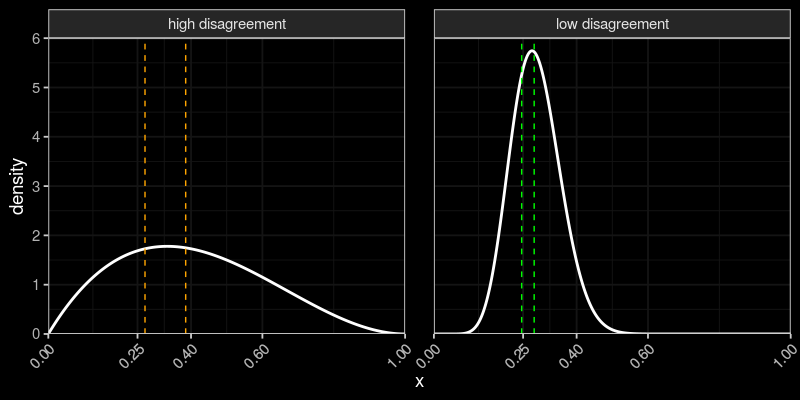

Extracting the collective wisdom in probabilistic judgments
Cem Peker
Tinbergen Institute, Erasmus University Rotterdam
Cem Peker
PhD in Economics (expected 2022, Tinbergen Institute)
BSc in Industrial Engineering, Bogazici University, Turkey.
Fields: Experimental Economics, Behavioral Economics, Behavioral Finance
Research:
- Elicit preferences, beliefs and judgments
- Aggregate judgments for decision making and forecasting ("wisdom of crowds")
References: Aurélien Baillon, Peter Wakker, Tom Wilkening
Cem Peker
PhD in Economics (expected 2022, Tinbergen Institute)
BSc in Industrial Engineering, Bogazici University, Turkey.
Fields: Experimental Economics, Behavioral Economics, Behavioral Finance
Research output: 1 solo R&R, JMP, 3 joint projects.
Memberships: Bayesian Crowd, INFORMS, Society for Judgment and Decision Making (SJDM), Forecast Aggregation Journal Club.
Extracting the collective wisdom in probabilistic judgments
Cem Peker
Tinbergen Institute, Erasmus University Rotterdam
Collective wisdom?
An event from Metaculus.com (a community forecasting platform)

Individuals disagree, how should we combine judgments?
Collective wisdom?
An event from Metaculus.com (a community forecasting platform)

Individuals disagree, how should we combine judgments?
Collective wisdom?
An event from Metaculus.com (a community forecasting platform)

Individuals disagree, how should we combine judgments?
Collective wisdom?
An event from Metaculus.com (a community forecasting platform)

Individuals disagree, how should we combine judgments?
Collective wisdom?
An event from Metaculus.com (a community forecasting platform)
Individuals disagree, how should we combine judgments?
Individuals disagree, how should we combine judgments?
Simple averaging is hard to beat (Clemen, 1989; Soll, 2009)

Problem: Shared information
Problem: Shared information
Example: Subprime mortgage crisis (2008-2010)
Mortgage-backed securities considered safe by most
Analysts collectively underestimated risks, miscalibrated average judgment
A robust aggregation method?
This paper develops the Surprising Overshoot (SO) algorithm.
Elicits and uses meta-beliefs
Prelec et al. (2017), Palley and Soll (2019), Palley and Satopaa (2020), Wilkening et al. (2021)
Meta-belief example:
What is the probability that Russia invades Ukraine before 2023?
(prediction)
What is the average probability estimated by the other experts?
(meta-prediction)
Relationship between predictions and meta-predictions
Evidence from three experimental studies
The SO algorithm...
...consistently outperforms average prediction.
...improves over existing aggregation algorithms.
Palley and Soll (2019), Palley and Satopaa (2020), Martinie et al. (2020)
The Framework
"Linear aggregation problem" (Palley and Soll, 2019; Palley and Satopaa, 2020)
Binary event, $\theta$: prob. of occurrence, $N$ experts, Common prior $E[\theta] = s$
$t_i$: iid, unbiased signal $(\theta \, \pm \text{error})$
prediction: $x_i = (1-\omega) \,\, \color{orange}{s} \, + \, \omega \,\, \color{orange}{t_i}$
meta-prediction: $z_i = E\left[ \frac{1}{N-1} \sum\limits_{j \neq i} x_j \, \middle\vert \, s,t_i \right] $
"Linear aggregation problem" example (Palley and Soll, 2019)
$Y \in \{0,1\}$: outcome of the event, $\theta = P(Y=1)$
Common prior on $\theta$: $Beta(m s, m(1-s))$
$t_i$: average of $\ell$ independent realizations of $Y$
Posterior belief: $Beta(ms + \ell t_i, m(1-s) + \ell(1-t_i))$ with $$E[\theta | s,t_i] = \frac{m}{m+\ell} s + \frac{\ell}{m+\ell} t_i$$
Let $\omega = \ell/(m+\ell) \,$ and $\, E[\theta | s,t_i] = (1-\omega) \, s + \omega \, t_i$
Simple averaging?
$ \displaystyle \bar{x} = (1-\omega) \,\, \color{orange}{s} \, + \, \omega \,\, \color{orange}{\frac{1}{N} \sum_{i=1}^N t_i} $
Then, \begin{align} \lim_{N \to \infty} \bar{x} &= (1-\omega) \,\, \color{orange}{s} + \omega \,\, \color{orange}{\theta} \neq \theta \quad \text{ for } \quad s \neq \theta \end{align}
Shared-information problem (Palley and Soll, 2019; Palley and Satopaa, 2020)
Solution?
The Surprising Overshoot Estimator
Suppose expert $i$'s meta-prediction overshoots average prediction
$\displaystyle z_i > \bar{x} $
$\displaystyle \color{orange}{(1-\omega) s} + \omega \underbrace{E\left[ \frac{1}{N-1} \sum\limits_{j \neq i} t_j \, \middle\vert \, s,t_i \right]}_\text{Expectation on avg signal of others} > \color{orange}{(1-\omega) s} + \omega \underbrace{\frac{1}{N} \sum_{i=1}^N t_i}_\text{avg signal}$
$\displaystyle \underbrace{E\left[ \theta | s,t_i \right]}_\text{expert $i$'s prediction ($x_i$)} > \underbrace{\frac{1}{N} \sum_{i=1}^N t_i}_\text{converges to $\theta$ for $N \to \infty$}$
For $N \to \infty$...
$z_i > \bar{x} \iff x_i > \theta$
Overestimate $\bar{x}$ in meta-prediction $\iff$ Overestimate $\theta$ in prediction
Why?
Both $x_i$ and $z_i$ depend on signal $t_i$
Optimistic $t_i \implies$ Overestimate in $x_i$ and $z_i$ both
For $N \to \infty$...
$z_i > \bar{x} \iff x_i > \theta$
Suppose 60% of all meta-predictions ($z_i$) overshoot $\bar{x}$
Then, 60% of all predictions ($x_i$) overshoot $\theta$
Population quantile of predictions at 40% gives $\theta$
For $N$ finite? SO estimator $=$ Sample quantile $\overset{p}{\longrightarrow}$ Population quantile as $N$ increases
For $N \to \infty$...
$z_i > \bar{x} \iff x_i > \theta$
What if $s = \theta$? No shared-information problem, $\bar{x} = \theta$
{Percentage of $z_i > \bar{x}$} $= $ {Percentage of $x_i > \bar{x}$}
Not equal when $s \neq \theta \to$ "Overshoot surprise" $\to$ shared-information problem
SO estimator $=$ Sample quantile of predictions at % of $\{\text{meta-pred} \leq \text{avg.pred}\}$
Improvement in accuracy when...
1. $N$ is not very small.
2. High disagreement among experts.
SO estimator $=$ Sample quantile of predictions at % of $\{\text{meta-pred} \leq \text{avg.pred}\}$
1. $N$ is not very small.
Sample quantile $\overset{p}{\longrightarrow}$ Population quantile as $N$ increases
Evidence using Study 1 from Palley and Soll (2019).
Subjects guess Prob(Heads) of a biased two-sided coin.
1. $N$ is not very small.
Evidence using Study 1 from Palley and Soll (2019).
Subjects guess Prob(Heads) of a biased two-sided coin.
48 coins, 685 subjects

1. $N$ is not very small.
Evidence using Study 1 from Palley and Soll (2019).
Analysis:
Get prediction and meta-prediction data, specify benchmarks
Generate Bootstrap samples of $N \in \{10,20,\ldots\}$
Get aggregate prediction per method & sample
Compare errors for each $N$
1. $N$ is not very small.
Evidence using Study 1 from Palley and Soll (2019).
Higher relative accuracy for in moderate to large samples.

Minimal Pivoting (Palley and Soll, 2019), Knowledge Weighting (Palley and Satopaa, 2020), Meta-Probability Weighting (Martinie et al., 2020)
1. $N$ is not very small.
Evidence using Study 1 from Palley and Soll (2019).
SO estimator has the lowest error in moderate to large samples.

Minimal Pivoting (Palley and Soll, 2019), Knowledge Weighting (Palley and Satopaa, 2020), Meta-Probability Weighting (Martinie et al., 2020)

Why does the SO algorithm work?
Positive (Negative) bias in $\bar{x} \to \bar{x}$ should be higher (lower) than the SO estimate

SO estimator $=$ Sample quantile of predictions at % of $\{\text{meta-pred} \leq \text{avg.pred}\}$
Higher improvement in accuracy when...
1. $N$ is not very small. ✓
2. High disagreement among experts.
2. High disagreement among experts.
Dashed lines: 30% and 50% quantiles.
SO estimator picks a quantile other than average prediction
More disagreement $\to$ Larger difference between quantiles $\to$ Potential improvement
2. High disagreement among experts.
Evidence using data from Wilkening et al. (2021)
"General Knowledge"
"Herbivores eat both plants and animals" (True or False?)
"State Capital"
"Los Angeles is the capital city of California" (True or False?)
- What is the probability that the statement is true?
- What is the average probability estimated by the others?
500 questions, 459 subjects
50 questions, 89 subjects
2. High disagreement among experts.
Methodology:
Categorize questions according to std dev in predictions (= disagreement).
Generate 1000 Bootstrap samples
In each Bootstrap sample...
Aggregate prediction per question/method
Pairwise difference in Brier score (SO vs benchmark)
95% Bootstrap confidence intervals for pairwise differences (SO vs benchmark)
2. High disagreement among experts.

Items categorized according to disagreement in predictions.
Significant differences in high-disagreement questions.
2. High disagreement among experts.

Items categorized according to disagreement in predictions.
More accurate than alternatives in high-disagreement questions.
SO estimator $=$ Sample quantile of predictions at % of $\{\text{meta-pred} \leq \text{avg.pred}\}$
Higher improvement in accuracy when...
1. $N$ is not very small. ✓
2. High disagreement among experts. ✓
★ Effective in moderate to large samples & difficult questions.
Application: Wisdom of polarized crowds
Will Turkish GDP per capita be higher by the end of 2022?
Pro vs anti government voters $\to$ polarized average predictions
SO estimate in pro and anti groups $\to$ less polarized
Useful because...
1. Depolarized WoC is more reliable
2. |SO estimate - average| is a measure of the polarization
Other works
Peer prediction markets to elicit unverifiable information
(joint with A. Baillon and S. van der Zee)
Incentives for self-extremized expert judgments to alleviate the shared-information problem
R&R at Decision's Special Issue on the Wisdom of Crowds
Robust recalibration of aggregate probability forecasts using meta-beliefs
(in progress, joint with T. Wilkening)
Truthful elicitation of investor preferences for high-ESG investments
(in progress)
Peer prediction markets to elicit unverifiable information
(joint with A. Baillon and S. van der Zee)
Example: Do people follow Covid-19 safety guidelines
Large-scale survey, would people answer carefully and honestly?
Incentive mechanism to elicit high-quality data
Peer prediction markets to elicit unverifiable information
(joint with A. Baillon and S. van der Zee)
PPM incentives:
1. Calculate % True and False picks this week
2. Bonus $>0$ if your pick is more popular this week

Manuscript for American Economic Journal:Microeconomics
Peer prediction markets to elicit unverifiable information
(joint with A. Baillon and S. van der Zee)
Incentives for self-extremized expert judgments to alleviate the shared-information problem
R&R at Decision's Special Issue on the Wisdom of Crowds
Robust recalibration of aggregate probability forecasts using meta-beliefs
(in progress, joint with T. Wilkening)
Truthful elicitation of investor preferences for high-ESG investments
(in progress)
Incentives for self-extremized expert judgments to alleviate the shared-information problem
R&R at Decision's Special Issue on the Wisdom of Crowds
Shared-information problem in a mixed forecasting crowd (experts and laypeople)
Reward experts for the accuracy of crowd average
Experts extremize away from the shared information
Alleviates the shared-information problem (experimental evidence)
Peer prediction markets to elicit unverifiable information
(joint with A. Baillon and S. van der Zee)
Incentives for self-extremized expert judgments to alleviate the shared-information problem
R&R at Decision's Special Issue on the Wisdom of Crowds
Robust recalibration of aggregate probability forecasts using meta-beliefs
(in progress, joint with T. Wilkening)
Truthful elicitation of investor preferences for high-ESG investments
(in progress)
Robust recalibration of aggregate probability forecasts using meta-beliefs
(in progress, joint with T. Wilkening from U of Melbourne)
Average probabilistic forecast is usually miscalibrated
A recalibration method using meta-predictions
Truthful elicitation of investor preferences for high-ESG investments
(in progress)
Do investors really prefer environmentally sustainable investments?
Survey with real investors
Questions?